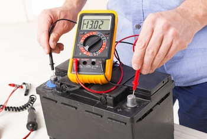
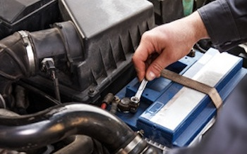
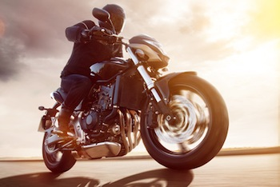
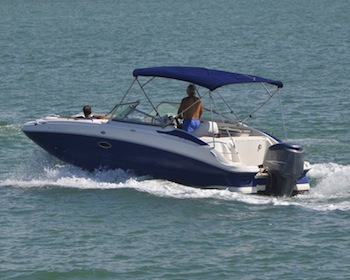
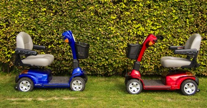
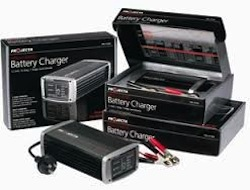

Free battery & alternator check
Know whether it’s the battery, the alternator or something else.
BATTERY SPECIALISTS · TOOWOOMBA
The right battery, fitted by people who know their way around a bonnet. From the school run to the back paddock, we’ll help you get moving.
Local know-how.
Personal service, right here in Toowoomba.

FIND YOUR FIT
From everyday runabouts to heavy equipment, our team can help match the battery to the job. Bring in your old battery or give us a call.

Starting, start-stop and touring batteries for modern and older vehicles.
↗ 02 / WORKFor trucks, tractors, forklifts, loaders and other hard-working equipment.
↗ 03 / TWO WHEELS
Options for motorcycles, scooters, ride-on mowers and garden equipment.
↗ 04 / WATER
Starting and deep-cycle batteries for boating and marine equipment.
↗ 05 / AWAYBattery solutions for caravans, motorhomes and auxiliary systems.
↗ 06 / OFF GRIDSolar panels and batteries for recreational vehicles and off-grid power.
↗ 07 / MOBILITY
Deep-cycle batteries for golf carts, mobility scooters and wheelchairs.
↗ 08 / EVERYDAY
Everyday batteries, mobile phone batteries, chargers and accessories.
↗Not sure what you need? Bring in the old battery or call with your make and model. We’ll help you find the right one.
Talk to a specialist ↗MORE THAN A BATTERY SHOP
Good advice is only the start. Our team can test, install and help when a flat battery catches you out.
Call (07) 4632 5533 ↗24-hour roadside battery assistance is available. Call for current rates and availability.
Know whether it’s the battery, the alternator or something else.
On-site installation, with an alternator check and care taken to retain vehicle settings.
From tricky battery locations to terminal replacement and accessory installs.
Call any time for help with a jump start or replacement battery.
Mobile phone battery service and WAECO refrigeration repairs.
GOOD PEOPLE. SOLID ADVICE.
Battery Barn is a family-owned business serving Toowoomba and the Darling Downs. We believe in practical advice, quality products and taking the time to understand what you need.
Whether you’re getting the family car sorted, keeping a worksite running or setting up for a trip, come in and talk to our team. We’re on the corner of Herries and Wylie Streets.
Get directions ↗A FEW GOOD QUESTIONS
Not sure if it’s time for a replacement? Here are a few common signs. If something feels off, give us a call and we can test it.
Ask us a question ↗Slow cranking, dim lights, repeated flat starts, corrosion or a battery that’s several years old can all be signs. A battery and alternator check can help pinpoint the cause.
Yes. Battery Barn offers free, on-site battery and alternator checks at the shop. Drop in at 170 Herries Street or call ahead.
Your vehicle make, model and year are useful. If possible, bring the old battery or a clear photo of its label and terminal layout.
Yes, 24-hour roadside battery assistance is available. Call (07) 4632 5533 to discuss where you are and the help you need. Rates may apply.
COME SAY G'DAY
Visit the team at our Toowoomba shop, or call for battery advice and roadside assistance.
Call (07) 4632 5533 ↗24-hour roadside battery assistance
Call for help any time ↗
Monday–Friday, 8 am–5 pm
Saturday, 8 am–2 pm